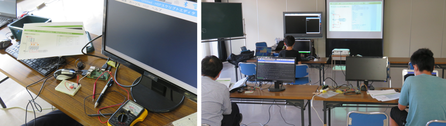

会場とオンラインの併設開催です
６月のCoderDojo青梅は、集会室でメンターと一緒のScratch、そしてオンラインは青梅でもついにマイクラファンが登壇。午後は電子工作の続きでラズパイをリモート制御＆フルカラーLED制御の回路組み立てを楽しみました。
33名。ユースメンター1名を含むニンジャ総勢15名、メンターは4名で合計19名、ほかに保護者や妹さんが会場だけで7名。オンライン保護者はたぶん7名以上、そうなると合計33名。たくさんの参加してくれてとても嬉しいです。
CoderDojo青梅チャンピオン（主宰）の「鹿野（かの）」です。仕事はITエンジニアです。スキル向上のためAIロボットをつくったりWEBアプリをつくったりしています。僕が改造したラピロは、東京MXテレビでちょい放映されました。イラストも書いていますが、入院中に南国を夢見て描いた夕焼けスケッチは毎週、さんまのお笑い向上委員会のスタジオに飾られているのが放映されています。好きなことをずうっと継続すると、いつか良いことあるぞ。
今月の午前ワークショップは２つ「ジッチミート体験と自由テーマでプログラミング」前回までにスーパーマリモブラザーズや自動で迷路描画などプログラミングのレベルアップ講座が続いたので、一旦、各自でプログラムの改造や自分なりのテーマ発見を促したい目的です。
今回はじめて参加した女の子２名は、なつみメンターと颯人ユースメンターによるScratchレクチャーを楽しんでくれました。初参加の二人とも楽しそうにワークに取り組んでいました。モニターのサンプルプログラムを見ながら一生懸命同じブロックを探してプログラムを作っている姿を見ることができるのはとても嬉しいことです。前回作った自動迷路描画の続きで、迷路の中を自動的に動き回る昆虫をプログラミングしているニンジャ。音声合成とＴＮＴシリーズのアニメーションストーリーを作るのが大好きなニンジャ。独自ゲームを制作中のニンジャ。様々な取り組みを近くで応援できることも楽しいです。あー－、画面キャプチャとるのを失敗してしまったのですが、青梅Dojoではじめてのマイクラ作品を発表してくれたニンジャもいます。プログラミングに関するものならScratch以外でも構いません、なんなら今一番好きなゲームの紹介でもいいです。
同日ではありますが、内容がガラリと変わってHSP3プログラミングと電子工作のワークです。いつかはロボット的な機械を作りたいのですが、ラズパイ本体に直接、ディスプレイとキーボードを接続してプログラミングしているとロボットに内蔵することができないので、本日はラズパイをリモート制御するためにLinuxの「xrdp」を使ったリモートデスクトップ接続を体験しました。

続いて、ディップスイッチに抵抗を繋いでフルカラーLEDの点灯テスト。スイッチ１単体で何色が点灯するのか、スイッチ２や４は何色。さらにスイッチ１と２の同時点灯では何色になるのか。「わかった、RGBだ」とか「テレビを顕微鏡で見ると分かるやつ」「三色混ぜると白色なんだよね」と言った学習の振り返りもできました。
これだけでは終わらず、今度はディップスイッチを使わずにフルカラーLEDをラズパイのGPIOに繋ぎなおして、HSP3プログラミングでいろいろな色に変わるイルミネーションを作ります。
みんなー、楽しかったよー。来月は間に合えばマイクロビット（micor:bit）をやるよ。またねー。
次回は７月10日（日）を予定しています